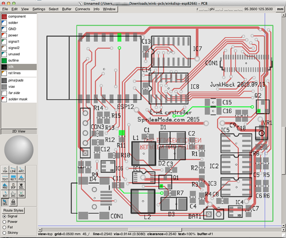
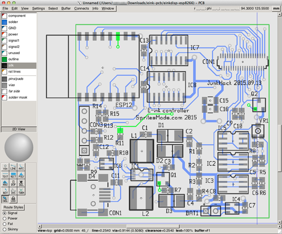
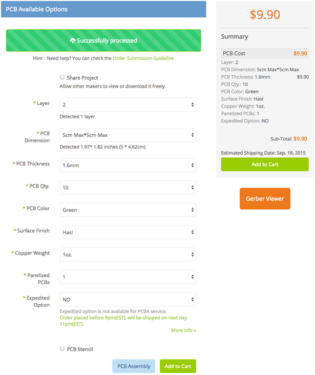
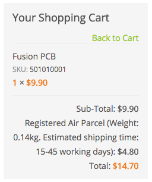
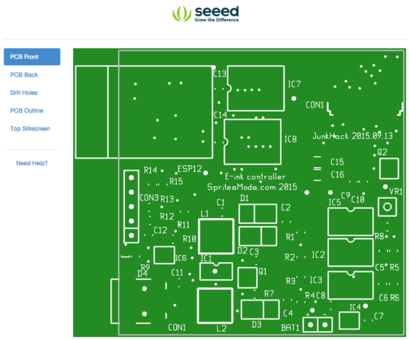
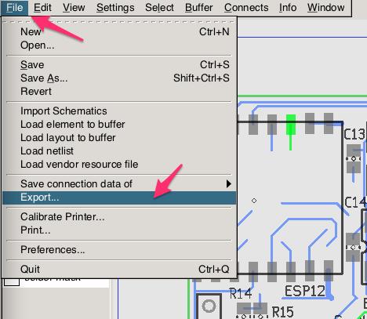
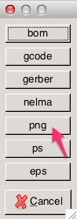
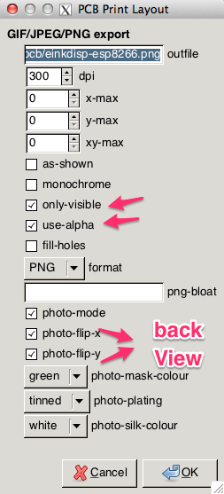
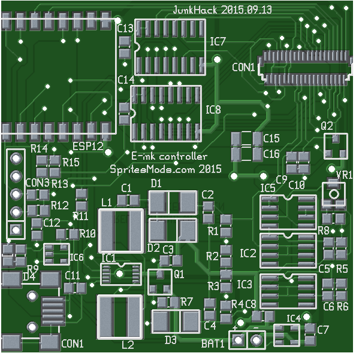
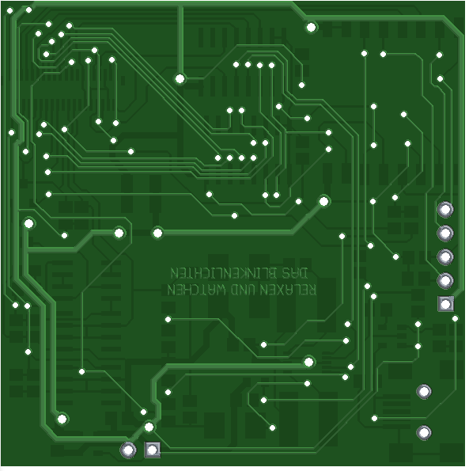

さて、土日にはまりまくって、やっとPCB データが見れたので、メモです。
以下のページの下のあたりにリンクがあってファイルの中を見ると、printed circuit board editor を使っているようでしたので、とにかくこれをインストールしてみました。
Wifi E-ink display – Conclusion
http://spritesmods.com/?art=einkdisplay&page=7
eink-pcb.tgz
.
├── LICENSE.txt
├── bom.txt
├── einkdisp-esp8266
├── einkdisp-esp8266.pdf
└── gerber
├── einkdisp-esp8266.bottom.gbr
├── einkdisp-esp8266.bottommask.gbr
├── einkdisp-esp8266.fab.gbr
├── einkdisp-esp8266.outline.gbr
├── einkdisp-esp8266.plated-drill.cnc
├── einkdisp-esp8266.top.gbr
├── einkdisp-esp8266.topmask.gbr
├── einkdisp-esp8266.toppaste.gbr
└── einkdisp-esp8266.topsilk.gbr1 directory, 14 files
PCB のサイトは、以下ですが osx にも入るのですが、ソース、brew、ports と試してやっと ports の pcb で表示できました。
printed circuit board editor
大変はまったので、メモしておきます。

回路図が見えるっていうわけじゃないようです。がーバーデータがレイヤーわけされて出ているようです。

環境は、osx 10.9.5 で、試したのは、PCB のソースと、後に知ったbrew 版。そして、最後でだめもとで入れた ports 版で、最後のでやっと表示できました。
流れは以下の感じです。
▼port の pcb を入れる
以下より、osx のバージョンにあったインストーラをダウンロード
http://www.macports.org/install.php
入れ終わったら、環境変数を反映。
$ source ~/.bash_profile
$ port search pcb
pcb @20140316 (x11, graphics)
Printed Circuit Board Layout Tool
xgsch2pcb @0.1.3_4 (cad, science, electronics)
intuitive and user-friendly graphical interface to gsch2pcb
Found 2 ports.
$ sudo port install pcb
途中、以下のエラーで最後までいかず、ログを見ると、GD のヘッダーチェックしているようでした。
—> Configuring pcb
Error: Failed to configure pcb, consult /opt/local/var/macports/build/_opt_local_var_macports_sources_rsync.macports.org_release_tarballs_ports_x11_pcb/pcb/work/pcb-20140316/config.log★
Error: org.macports.configure for port pcb returned: configure failure: command execution failed
Please see the log file for port pcb for details:
/opt/local/var/macports/logs/_opt_local_var_macports_sources_rsync.macports.org_release_tarballs_ports_x11_pcb/pcb/main.log
To report a bug, follow the instructions in the guide:
http://guide.macports.org/#project.tickets
Error: Processing of port pcb failed★log
#define HAVE_SYS_TIMES_H 1
#define HAVE_SYS_WAIT_H 1
#define HAVE_DLFCN_H 1
#define HAVE_GD_H 1★configure: exit 1
とりあえず、libgd を入れたり削除してみたりしてみたのですが、だめで、brew のを削除してみたら、大丈夫でした。
$ brew uninstall libgd
ports 版は、以下に入ります。
$ which pcb
/opt/local/bin/pcb
とりあえず、以下のエラーは出ていますが見れたり、保存したりexport して、がーバーデータを出したりはできるので良しとします。
$ /opt/local/bin/pcb ; exit;
Dynamic session lookup supported but failed: launchd did not provide a socket path, verify that org.freedesktop.dbus-session.plist is loaded!
pcb_dbus: DBus connection Error (Not enough memory)
brew 版は入るのですが、レンダリングがおかしく表示が見えない感じです。以下のような感じと同じ現象に会いました。
https://github.com/Homebrew/homebrew-x11/issues/120
OpenGL のライブラリの問題のようですが、解決方法がわからず、ports 版を入れてとりあえず満足です。
で、オンラインで入稿できて安いところはないかなぁと探してみると、Fusion PCB というのがあるそうです。smartDiy の愛称を持つ山梨県南アルプス市（すごい名前の市ですよね）にある株式会社ASsystemさんのWEBサイトです。
海外PCB発注第2弾 【Fusion PCB】 注文から到着まで
サイトを見ると、品質も良くて5枚から発注でき、しかも安いので発注まではまだしていませんが途中まで入稿してみました。

５ｃｍ四方のが10枚できて、値段は約$10 です。
 送料を入れても、15ドル で2000円弱でいけます。これは、エッチングしてやる価値もないほど安いので、ここに発注することにしました。もう少しいろいろと調査してから、発注しようかなと考えています。

がーバーデータを入れるとプレビューもしてくれます。ファイル名は、以下のようにするのがセオリーのようです。
パターン表: pcbname.GTL
パターン裏: pcbname.GBL
シルク面表: pcbname.GTO
シルク面裏: pcbname.GBO
基板マスク表: pcbname.GTS
基板マスク裏: pcbname.GBS
ドリルデータ: pcbname.TXT
基板外形: pcbname.GML
送料は、急がないので一番安いのでよいです。

今まで、プリント基板をオンラインで発注しようとしたことがなかったので、これは１からオリジナルで回路を作るノウハウを実につけて実際に発注してみる価値がありますね。両面基盤で5cm が10枚作れて2000円未満なんてなんてすばらしいんでしょうか。1枚あたり200円ということですよね。
Eagleか、Kicad で簡単なオリジナル基盤、たとえば１セル用のバックブースト＋ESP12 （いまだとギテキ対応したモジュールですかね）とか汎用性がある基盤を作ってみるとすごく需要がありそう。ESP8266 使う身になると電源回路が付いていて、かつブレッドボードに空きがある形のPCB基盤って今のところなさそうだと思うので良いかもです。
オリジナルのPCB基盤を作るノウハウの蓄積、当面の目標としてみます。
で、PCBエディターを触っていたら、フォトモードで基盤を出力するものがありました。memoしておきます。





ほー、なるほど。